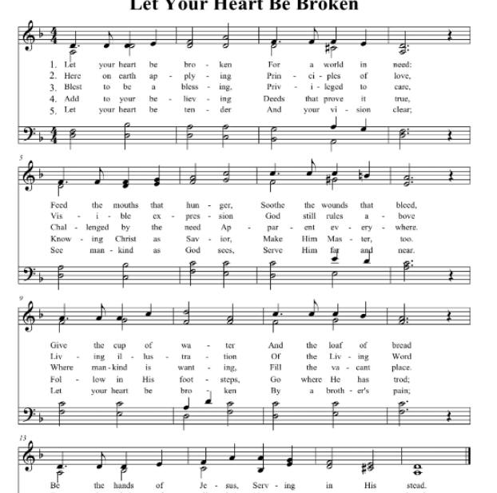

0902 Let your heart be broken _Leech, Bryan Jeffery 讓你心破碎
BJORKLUND ●
|
|
讓你心破碎 Let Your Heart Be Broken
曲：James Mountain 調：BJORKLUND
格律：6.5.6.5.Double.
詞：Bryan Jeffery Leech 譯：修《恩頌聖歌》
詩集：《世紀頌讚》401
|
|
verse 1
Let your heart be broken by a world in need
Feed the mouths that hunger, sooth the wounds that bleed
Give a cup of water and a loaf of bread
Be the hands of Je - sus, serving in His stead. verse 2
Here on earth applying principles of love
Visible expressions God still rules above
Living illustrations of the Living Word
To the minds of all who've never seen or heard. verse 3
Blest to be a blessing, Privileged to care
Challenged by the need apparent everywhere
Where mankind is wanting fill the vacant place
Be the means through which the Lord reveals His grace.
Words by Bryan Jeffery Leech. Music by James Mountain. ©1976 by THE
EVANGELICAL COVENANT CHURCH
|
讓世界的需要破碎你的心：
餓者願得飽足，傷者得安慰；
送上你的乾糧，施出一杯水，
服侍人如耶穌─祂要使用你。
讓主愛的原則實踐在世上，
藉你行動表彰基督今作王；
願永活的真道顯於你生活，
向未聞未見的彰顯祂的國。
能助人確蒙福，服務是特權；
讓世界的需要向你發挑戰；
凡人類有需要，當補足缺欠，
讓主藉你表彰祂豐盛恩典。
藉行為讓信心切實得證明；
領受主的救恩，當遵祂命令；
隨主腳蹤奔跑，奮勇不畏難，
為主投入世間，關切人苦難。
願你異象清晰，你的心仁慈，
常存主的愛心，到各處服侍；
讓弟兄的哀痛使你心破碎，
奉獻財力、物資，施與不收回。
|
|
https://hymnary.org/hymn/CGH2010/page/58

https://hymnsforworship.org/sdah-575-let-heart-broken/ |
|
|
|
|
Short Name: |
Bryan Jeffery Leech |
|
Full Name: |
Leech, Bryan Jeffery, 1931- |
|
Birth Year: |
1931 |
Bryan Jeffrey Leech was born
in Middlesex, England in 1931. He came to the United States in 1955 and
studied at Barrington College and North Park Seminary. He was ordained in 1961
and served in the Covenant Church. He composed more than 500 songs.

Bryan Jeffery Leech was born in Buckhurst Hill Essex, England in 1931.
Educated in England, he came to the U.S. in 1955, receiving his B.A. from
Barrington College and, after attending North Park Seminary in Chicago, was
ordained in the Evangelical Covenant Church. He served pastorates in Boston,
Massachusetts, Montclair, New Jersey, San Francisco and Santa Barbara from
1958 to 1975, and is now Minister of Congregational Care and Radio at First
Covenant Church, Oakland, California.
Leech is the author of some 250 songs and anthems. His songs have been
recorded and performed by Norma Zimmer, Paul Sandberg, The Hour of Power Choir
from the Crystal Cathedral, the choir of the Hollywood Presbyterian Church,
the choirs of St. Mary’s Cathedral and Grace Cathedral, San Francisco, and
very recently the Roger Wagner Chorale in their CD recording of "No Longer a
Baby. He has been published by Lorenz, Theodore Presser, Lillenas, Columbia
Pictures Music, Warner Brothers, Fred Bock Music, Hope Publishing, and Pavanne.
To view several more of Rev. Leech's hymns, we suggest you go to the Covenant
Hymnal published in 1996 by Covenant publications, 5101 N. Francisco, Chicago,
IL 60625.
WYE VALLEY
|
Short Name: |
James Mountain |
|
Full Name: |
Mountain, James, 1844-1933 |
|
Birth Year: |
1844 |
|
Death Year: |
1933 |
Rv James Mountain United
Kingdom 1844-1933.

Born at Leeds,
Yorkshire, England, he attended Gainford Academy, Rotherham College,
Nottingham Institute, and Cheshunt College. He became pastor at Great Marlow,
Buckinghamshire. Leaving the clerical field due to ill health, he conducted
evangelistic campaigns in Britain (1874-82) and worldwide (1882-1889). An
author, he wrote a number of books. He published a hymn book, “Hymns of
consecration and faith”,and “Sacred songs for missions, prayer, and praise
meetings” (1876). He died at Tunbridge Wells, Kent, England.
John Perry
BJORKLUND MAJOR
Notes
James Mountain (b. Leeds,
York, England, 1844; d. Tunbridge Wells, Kent, England, 1933) composed WYE
VALLEY for Havergal's text ("Like a river glorious") on one of his first
preaching tours through Britain. Throughout his life Mountain was influenced
by the Countess of Huntington and her following of evangelical Pietists in
the Anglican Church. He was trained at the Pietist Rotterham College and
later served the Countess's church in Tunbridge Wells (1889-1897).
Strongly influenced by
Dwight L. Moody and Ira D. Sankey's (PHH
73) evangelistic tour of England, Mountain followed their example and
did evangelistic work from 1874 to 1889, both in England and abroad. Later
he became a Baptist and founded St. John's Free Church in Tunbridge Wells.
Mountain wrote a number of devotional works as well as hymns and hymn tunes.
Mountain also imitated Sankey's musical style. Assisted by Frances Havergal,
he compiled Hymns of Consecration and Faith (1876), which
included her text with the heading "Perfect Peace." WYE VALLEY is named for
the district around the village of Wye, near Ashford in Kent.
This relatively simple
tune is marked by repeated melody tones. In fact, the refrain melody is a
repeat of the latter half of the tune for the stanzas. Sing in harmony
throughout in six long phrases rather than twelve short ones. Try singing
unaccompanied on stanza 2.
--Psalter Hymnal
Handbook
讓你心破碎 Let Your Heart Be Broken
曲：James Mountain
調：BJORKLUND
格律：6.5.6.5.Double.
詞：Bryan Jeffery Leech
譯：修《恩頌聖歌》
詩集：《世紀頌讚》401
The Heart of Jesus was broken in love for people like you and me. So should
our hearts be broken in love for others who do not know Him yet. (Lesson
10, 2nd Quarter 2021 – Monday, Heart Work, 5/31/2021)
Will you have a heart like the heart of Jesus? Then, do not be surprised if
your heart is easily broken for world in need. So the song goes: Let your heart
be broken…and be the hands of Jesus serving in His stead.” (Lesson
13, 2nd Quarter 2021 -Tuesday, New Covenant and New Heart, 6/22/2021)
 “And
if thou draw out thy soul to the hungry, and satisfy the afflicted soul;
then shall thy light rise in obscurity, and thy darkness be as the noonday:
“And
if thou draw out thy soul to the hungry, and satisfy the afflicted soul;
then shall thy light rise in obscurity, and thy darkness be as the noonday:
“And the LORD shall guide thee continually, and satisfy thy soul in drought,
and make fat thy bones: and thou shalt be like a watered garden, and like a
spring of water, whose waters fail not.” Isaiah 58:10-11
 Friend!
Friend!
Are you, by any chance, a member of the “B.B.B.”?*
☞ “Alas, how many are appropriating to themselves the gifts of God! How many
are adding house to house and land to land. How many are spending their
money for pleasure, for the gratification of appetite, for extravagant
houses, furniture, and dress. Their fellow beings are left to misery and
crime, to disease and death. Multitudes are perishing without one pitying
look, one word or deed of sympathy.
“Men are guilty of robbery toward God. Their selfish use of means robs the
Lord of the glory that should be reflected back to Him in the relief of
suffering humanity and the salvation of souls. They are embezzling His
entrusted goods. The Lord declares, ‘I will come near to you to judgment;
and I will be a swift witness against … those that oppress the hireling in
his wages, the widow, and the fatherless, and that turn aside the stranger
from his right.’ ‘Will a man rob God? Yet ye have robbed Me. But ye say,
Wherein have we robbed Thee? In tithes and offerings. Ye are cursed with a
curse; for ye have robbed Me, even this whole nation.’ Malachi 3:5, 8, 9.
‘Go to now, ye rich men, … your riches are corrupted, and your garments are
motheaten. Your gold and silver is cankered, and the rust of them shall be a
witness against you…. Ye have heaped treasure together for the last days.’
‘Ye have lived in pleasure on the earth, and been wanton.’ ‘Behold, the hire
of the laborers who have reaped down your fields, which is of you kept back
by fraud, crieth: and the cries of them which have reaped are entered into
the ears of the Lord of sabaoth.’ James 5:1-3, 5, 4.” COL
371.1 – 371.2
* Guild of the “Builders
of Bigger Barns”,
that is?! (Please
see: Luke 12:16-21!)
“The only thing that would be of value to him now he has not secured. In
living for self he has rejected that divine love which would have flowed out
in mercy to his fellow men. Thus he has rejected life. For God is love, and
love is life. This man has chosen the earthly rather than the spiritual, and
with the earthly he must pass away.” COL
258. 3
☞ “…Isaiah 58:6, 10. Here is set forth the very spirit and character of the
work of Christ. His whole life was a sacrifice of Himself for the saving of
the world….” DA
278.2
☞ “ ‘Be not forgetful to entertain strangers: for thereby some have
entertained angels unawares.’ Hebrews 13:2. These words have lost none of
their force through the lapse of time. Our heavenly Father still continues
to place in the pathway of His children opportunities that are blessings in
disguise; and those who improve these opportunities find great joy.
“…No act of kindness shown in His name will fail to be recognized and
rewarded. And in the same tender recognition Christ includes even the
feeblest and lowliest of the family of God….” PK
132.1 – 132.2
☞ “These plain utterances of the prophets and of the Master Himself, should
be received by us as the voice of God to every soul. We should lose no
opportunity of performing deeds of mercy, of tender forethought and
Christian courtesy, for the burdened and the oppressed. If we can do no
more, we may speak words of courage and hope to those who are unacquainted
with God, and who can be approached most easily by the avenue of sympathy
and love.”
“Rich and abundant are the promises made to those who are watchful of
opportunities to bring joy and blessing into the lives of others….” PK
327.1 – 327.2
☞ “We are ‘a spectacle unto the world, and to angels, and to men.’ 1 Cor
4:9. Our mission is the same as that which was announced by Christ, at the
beginning of His ministry, to be His mission. ‘The Spirit of the Lord is
upon Me,’ He said, ‘because He hath anointed Me to preach the gospel to the
poor; He hath sent Me to heal the brokenhearted, to preach deliverance to
the captives, and recovering of sight to the blind, to set at liberty them
that are bruised, to preach the acceptable year of the Lord.’ Luke 4:18,
19.”
“We are to carry forward the work placed in our hands by the Master. He
says:…
‘The
poor shall never cease out of the land: therefore I command thee, saying,
Thou shalt open thine hand wide unto thy brother, to thy poor, and to thy
needy, in thy land.’ ‘All things whatsoever ye would that men should do to
you, do ye even so to them.’ Isaiah 58:10, 11; Matthew 7:12; Deuteronomy
15:11”
“We shall be tempted to be covetous, to be avaricious, to cultivate an
insatiable desire for more. If we yield to this temptation, it will bring
upon us the same perils that fell upon ancient Jerusalem. We shall fail to
know God and to represent Him in character. We need to watch ourselves
closely lest we fall because of unbelief, as did the Jews. We are to work
unselfishly….” 8T
134.1 – 134.3
Let Your Heart Be Broken
Verse 1
Let your heart be broken for a world in need:
Feed the mouths that hunger, soothe the wounds that bleed,
Give the cup of water and the loaf of bread –
Be the hands of Jesus, serving in His stead.
Verse 2
Here on earth applying principles of love,
Visible expression – God still rules above;
Living illustration of the Living Word
To the minds of all who’ve Never seen or heard.
Verse 3
Blest to be a blessing privileged to care,
Challenged by the need apparent everywhere.
Where mankind is wanting, fill the vacant place;
Be the means through which the Lord reveals His grace.
Verse 4
Add to your believing deeds that prove it true,
Knowing Christ as Savior, make Him Master, too.
Follow in His footsteps, go where He has trod;
In the world’s great trouble risk yourself for God.
Verse 5
Let your heart be tender and your vision clear;
See mankind as God sees, serve Him far and near.
Let your heart be broken by another’s pain!
Share your rich resources, give and give again.
Bryan Jeffery Leech, 1975 (1931- ); Bryan
Jeffery Leech
Tune: BJORKLUND
http://sosinitiatives.org/2018/09/20/let-your-heart-be-broken/
https://www.umcdiscipleship.org/resources/history-of-hymns-we-are-gods-people
"We Are God's People,"
by Bryan Jeffery Leech;
The Faith We Sing, No. 2220

We Are God's People
We are God's people, the chosen of the Lord,
Born of the Spirit, established by the Word;
Our cornerstone is Christ alone, and strong in Christ we stand;
O let us live transparently and walk heart to heart and hand in hand.*
The theology of the church is often expressed in its congregational singing.
Congregational singing is part of the church's DNA. The church presents God's
message of love, reconciliation, and mission to the local and global community,
partly through its congregational song. The text for “We Are God's People,”
published in The Faith We Sing and Celebrating Grace: Hymnal for Baptist Worship
(as well as in numerous other denominational hymnals) is inspired by biblical
texts that best identify the church's DNA as "God's people," "God's loved ones,"
"the body," and "the temple."
The opening stanza is built on the imagery in 1 Peter 2:9, that the community
of faith is built on the foundation of Christ ("our cornerstone is Christ
alone"), and that God's call and election are declared to a race, a people, a
collegium of priests (Bartlett and Taylor, 2010, 462). Our journey of faith
cannot be realized apart from a relationship with God and through God's active
presence in the world. The second stanza continues to build on the 1 Peter
imagery. Boston College theologian Pheme Perkins writes that through God's mercy
and election, God's gift is open to all (Perkins, 2012, 44). Thus the church is
obligated to be God's people ("now let us learn … the gift of love once given").
Stanza three highlights the church's character of being "the body."
Theologian Miguel A. De La Torre writes that the fundamental message of
Ephesians 1:22-23 is that of paradox, that the tragedy of the cross, its symbol
of failure and shame, is transformed to glory and power through the church's
solidarity with Christ (Bartlett and Taylor, 2010, 512).
The final stanza affirms the primary message of 1 Corinthians 3:16, that the
church is more than community and serves as God's temple in human form, the
place where God's Spirit dwells (Hays, 2011, 56). Paul refers to the church as
people of the Spirit. ("We are a temple, the Spirit's dwelling place.")
The text for “We Are God's People” was written by Bryan Jeffery Leech
(1931-2015) and was first published in Hymns for the Family of God (Paragon,
1976). It has appeared in several hymnal collections, including The Baptist
Hymnal (1991), Hymns for a Pilgrim People (2007), The Covenant Hymnal (1996),
and The Faith We Sing (2001). The tune SYMPHONY is an arrangement of the opening
theme from the fourth movement of Johannes Brahms' Symphony No. 1 in C minor.
(Forbes, 1992, 262). It is worth noting that Brahms began writing this work in
1855, but the first movement was not completed until 1862. For unknown reasons,
Brahms did not return to the work until the summer of 1874. While the work was
completed in September 1876, Brahms continued to make minor revisions until its
premiere performance in Karlsruhe, Germany, on November 4, 1876. Leech
recommended the adaptation of the Brahms’ theme as the hymn tune because of its
musical strength and the singability of the melody. Composer Fred Bock did the
actual arrangement of the tune. The use of classical melodies as hymn tunes was
common in the nineteenth century. The present arrangement is one of the
relatively few examples of such adaptations in the late twentieth century. The
Baptist Hymnal (1991) was the first publication of both text and tune in a
Southern Baptist collection. (Forbis, 1992, 263).
Bryan Jeffery Leech was born in Middlesex, England, on May 14, 1931, and
spent more than half of his life in the United States, coming to the States in
1955 after serving in the Royal Army and studying at London Bible College. He
continued his education at Barrington College and later North Park Seminary. He
was ordained to the ministry in 1961 and served Covenant congregations in
Boston, Montclair, New Jersey, San Francisco, Santa Barbara, and Oakland. In
addition to his pastoral duties, Leech was a member of the commission that
prepared The Covenant Hymnal (1973) and was assistant editor for Hymns for the
Family of God (1976). Leech did not begin writing hymns until his mid-thirties,
and he went on to compose more than five hundred hymns, songs, anthems, and
cantatas, with perhaps his most well-known and most sung hymn being "Come, Share
the Lord."
Leech shares the background story behind the writing of "We Are God's
People":
"We had at that time very few popular hymns relating to the church. So on a
gray, smoggy morning at a friend's office in Southern California, I decided to
work toward remedying this lack by writing one of my own. The day was the 4th of
July, 1975. I sat at a typewriter in his office and I did not get up until I had
written all four verses. The result was 'We Are God's People'. It turned out to
be the favorite of all my hymn texts. I loved singing it and I like especially
the mixture of the metaphors in it, some biblical and some my own, which
illustrate the true nature of the church. 'We are a temple, the Spirit's
dwelling place, formed in great weakness, a cup to hold God's grace; we die
alone, for on its own each ember loses fire: yet joined in one flame burns on to
give warmth and light, and to inspire.'" (http://covenantcompanion.com/2015/07/02/obituary-bryan-jeffery-leech/)
Leech died on June 30, 2015, in California.
*© Copyright 1976, 2004 Fred Bock Music Co., Inc. All rights reserved. Used
by permission.
FOR FURTHER READING:
Bartlett, David L and Taylor, Barbara Brown, editors, Feasting on the Word, Year
A, Volume 2. Louisville: Westminster John Knox Press, 2010.
Forbis, Wesley L, Handbook to the Baptist Hymnal. Nashville: Convention
Press, 1992.
Hays, Richard B., Interpretation: A Bible Commentary for Teaching and
Preaching: First Corinthians. Louisville: Westminster John Knox Press, 2011.
Music, David W. and Price, Milburn, A Survey of Christian Hymnody, 5th
Edition. Carol Stream: Hope Publishing Company, 2010.
Nash, Robert Scott, Smyth & Helwys Bible Commentary: I Corinthians. Macon:
Smyth & Helwys Publishing Inc., 2009.
“Obituary: Bryan Jeffery Leech.” Covenant Companion. July 2, 2015, http://covenantcompanion.com/2015/07/02/obituary-bryan-jeffery-leech/
Perkins, Pheme, Interpretation: A Bible Commentary for Teaching and
Preaching: First and Second Peter, James, and Jude. Louisville: Westminster John
Knox Press, 2012.
Simons, John E., coordinating editor, Celebrating Grace: Hymnal for Baptist
Worship. Macon: Celebrating Grace, Inc., 2010.
"We Are God’s People, the Chosen of the Lord." The Canterbury Dictionary of
Hymnology. Canterbury Press, http://www.hymnology.co.uk/w/we-are-god’s-people,-the-chosen-of-the-lord.
“We Are God’s People,” www.hymnary.org
Let Your Heart Be Broken
Add to your believing deeds that prove it true —
Knowing Christ as Savior, make Him Master too;
Follow in His footsteps, go where He has trod,
In the world’s great trouble risk yourself for God.
…In the world’s great trouble, risk yourself for
God. Risk yourself for God. Risk
yourself.
When I think of the term ‘risk’, what come immediately to mind are
conventional things. I think of things the world would call risky —
speeding, unsafe sex, day trading, touching raw poultry…you get the picture.
Way down on my list would be taking the risk of following in Jesus’
footsteps. What kind of risks might there be in following Jesus’ leadership
out in the ‘real world’?
How about standing with the outcast? Standing up for love in a world
where hate is a gut reaction and ‘staying out of things that
don’t involve you’ is considered, well, magnanimous enough?
Turning the other cheek…going the second mile? Tipping over the tables of
the moneychangers on a raking-it-in-hand-over-fist-type day? Saying “ENOUGH,
for God’s sake!” to the body count that rises higher than the
temperature on an Alabama July day?
Things like that could get a person in trouble…
https://www.auburnfbc.org/2016/07/10/let-your-heart-be-broken-2/